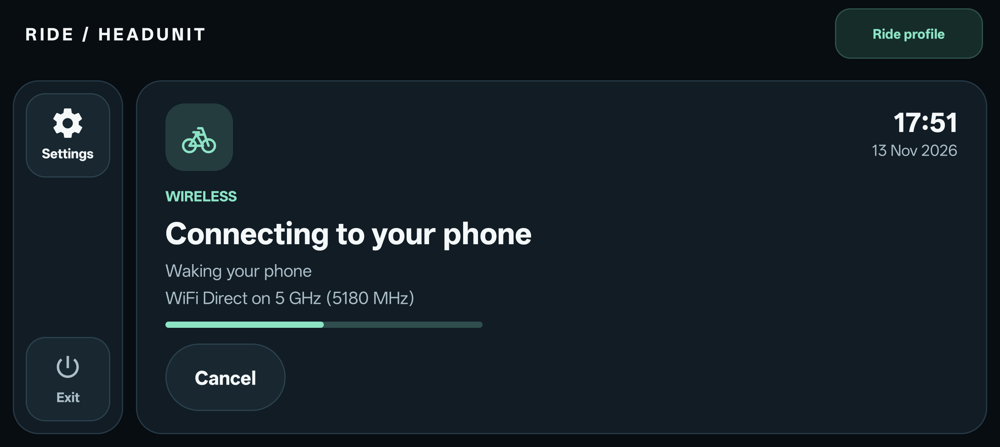

A calmer dashboard
Dark slate surfaces, readable mint accents and large connection controls. Decorative shimmer and widgets start switched off.
AN OLD PHONE. A NEW PURPOSE.
Turn your spare Android phone into a wireless Android Auto display for your motorcycle. A focused receiver, built around the essentials.
Free & open source · ARM64 Android 6.0+ receiver
Preview build · tested on OnePlus 10T / Android 15

Your main phone runs Android Auto.
Your old phone becomes the touchscreen.
More useful hardware.
Less to get in the way.
Dark slate surfaces, readable mint accents and large connection controls. Decorative shimmer and widgets start switched off.
Mount your phone upright for a taller map, or use a horizontal layout. Auto-rotate off defaults to landscape; on follows the system sensor.
Start with hardware H.264, SurfaceView and a 720p / 30 FPS profile. Choose a sharper view or a compatibility renderer when your device needs it.
ONE TAP, THREE PROFILES
Profiles are adjustable starting points, not speed guarantees. Reconnect after changing one.
720p · 30 FPS
SurfaceView · hardware H.264
1080p · 30 FPS
SurfaceView · hardware H.264
720p · 30 FPS
TextureView · optional latency keys off
Install the preview APK on your spare ARM64 Android phone. Finish the first-run notice and grant Bluetooth, nearby Wi-Fi and microphone permissions as needed.
Enable Bluetooth and Wi-Fi on both phones. Keep Ride Headunit in Native wireless mode, then pair the phones and accept Android Auto setup on your main phone.
Choose a ride profile and enable system Auto-rotate if you want portrait and landscape switching. Keep the stock Android launcher, or optionally configure dedicated Home mode.
BEFORE YOU INSTALL
Ride Headunit receives Android Auto; it does not control Google Maps routing. Google Maps in Android Auto currently asks for driving directions when a motorcycle route is selected on the main phone. Use two-wheeler routing directly in the phone app when you need it.
This APK targets ARM64 devices running Android 6.0 or newer. It was tested on a OnePlus 10T running Android 15. Native wireless also depends on your phones, Android Auto version, permissions and Wi-Fi/Bluetooth support. Compatibility is not guaranteed for every device.
Video dimensions are negotiated when a session starts. A portrait/landscape change held for 1.2 seconds reconnects projection to request the correct layout. With system Auto-rotate disabled, the automatic mode selects landscape.
The Native wireless path uses normal Bluetooth pairing and Wi-Fi. It does not require root, USB debugging or Developer options on your main phone.
Android accepts updates only when the package and signing identity match. This release uses the developer's Android debug signing identity; a separately built CI APK will usually use another key. Back up your settings before switching builds. No private signing keys are published.
No. This is an independent AGPL-3.0 fork of Open Headunit, descended from Michael Reid's headunit project. Google, Android Auto and OnePlus names belong to their respective owners. Upstream attribution and license notices are retained.
YOUR NEXT RIDE STARTS HERE